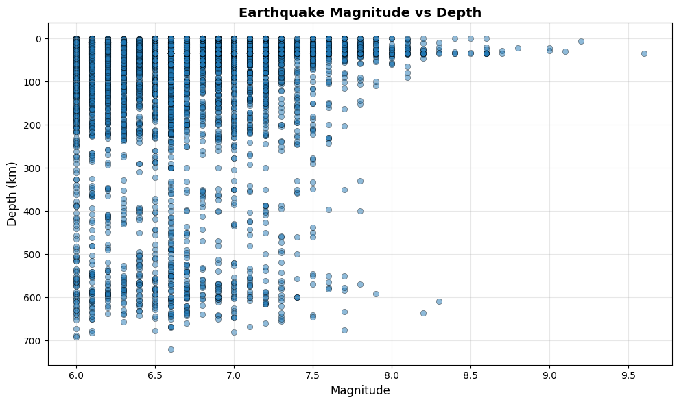
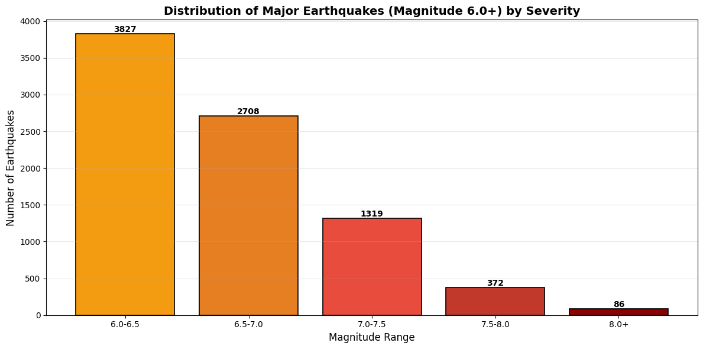

Experiment A: Portfolio Enhancement
Feature Overview
For Experiment A, I used Claude Sonnet 4.5 as a coding tool to enhance my portfolio homepage. I added a “Featured Project Spotlight” section that allows users to click thumbnail buttons to switch the featured project content (image, title, description, and link) with a subtle fade/slide animation.
Planning
Before prompting AI, I identified the components I would need:
- A featured area showing: image, title, 1–2 sentence description, and a “View Project” button link
- CSS for layout, responsive spacing, and monitoring
- JavaScript to update the featured content on click/keyboard input
Prompt + AI Output (Documentation)
Below is the prompt I used. I saved the full AI output and my refinements in my repository for transparency.
I have a static HTML/CSS portfolio site (no frameworks). I want a slightly playful “Featured Project Spotlight” section on my homepage.
Requirements: A featured area showing: image, title, 1–2 sentence description, and a “View Project” button link
Below it, 4 thumbnail buttons (not links) with small images + labels
When a thumbnail is clicked, update the featured image/title/description/link dynamically (no page reload)
Add a subtle playful animation when switching (fade + small slide is fine, keep it tasteful)
Accessibility: thumbnails are button elements, keyboard operable, clear :focus-visible styles, meaningful alt text
Use vanilla JavaScript only, beginner-friendly, no libraries
Please output:
HTML for the spotlight section
CSS for layout + animation + selected thumbnail state
JavaScript to handle switching and animation
Short explanation of how it works.
Key Code Snippet (with Understanding Spectrum Comments)
This snippet shows part of the JavaScript logic that powers the Featured Project Spotlight. The comments reflect my honest position on the understanding spectrum after reviewing and testing the AI-generated code.
// I understand basic code such as title, description, etc. I was able to link my images and hmtl lab files in this.
//Not sure if I am aware of why java is needed/ whats the difference, but i understand the basics.
const projects = [
{
title: 'AI Tool Evaluation',
description: 'A comprehensive analysis of AI tools and their capabilities, exploring how artificial intelligence is transforming digital culture and everyday workflows.',
image: 'images/Screenshot 2026-02-22 at 1.28.34 PM.png',
link: 'lab02.html',
alt: 'AI Tool Evaluation project preview'
// The animations, and buttons are definitley something I am new too, and think AI did a good job with applying what i wanted
// I like the enhacements with the pop-ups and highlights. This is defintley something I could not have done without AI, and I am happy with how it turned out.
// Re-enable interactions after animation
setTimeout(() => {
isAnimating = false;
}, 300);
}, 300); // Match CSS transition duration
}
Prompts, Testing, and Iterations
I treated AI as a collaborator rather than a final answer. After implementing the initial output, I tested the feature in my browser and refined the code through additional prompts and debugging.
Change 1: Refinement Request
I also would like the spotlight featured project thumbnail photos to match the photo that is used in the bottom button thumbnail.
Result: This pushed me to keep the images consistent across the thumbnails and featured display, and helped me understand how storing content in a single projects array reduces duplication.
Change 2: Debugging Request
The tableau vis thumbnail is not appearing when commanded. Look for errors in the JavaScript to fix this.
Result: The issue ended up being a file path/filename mismatch (spaces/capitalization/encoding). AI pointed me in the right direction, but I ultimately fixed it by making the image path formatting consistent. This reinforced how sensitive web projects are to exact filenames.
Screenshot / Demo
Screenshot of the spotlight feature on my homepage:

Experiment B: Python Code Generation in Google Colab
Task Definition
For Experiment B, I used AI-assisted Python code generation in Google Colab to analyze my Lab 4 earthquake dataset (magnitude 6.0+). My goal was to clean key columns (magnitude and depth) and create a specific visualization that shows the relationship between earthquake magnitude and depth, along with a second chart that summarizes how magnitudes are distributed within the 6.0+ dataset.
Prompt + AI Output (Documentation)
I am working in Google Colab using a CSV dataset of earthquakes. The dataset includes columns such as: magnitude (mag), depth, time, latitude, longitude, and place.
Please generate Python code that:
uploads a CSV file in Colab
loads it into pandas
prints column names and missing value summary
converts magnitude and depth to numeric safely (handle errors)
drops rows where magnitude or depth is missing
creates:
a scatter plot of magnitude vs depth (invert depth axis so deeper earthquakes appear lower)
a bar chart of earthquake counts by magnitude category (<4, 4–5, 5–6, 6+)
uses matplotlib only (no seaborn)
includes clear comments explaining each step
includes simple edge case checks (for missing columns)
Keep it beginner-friendly but robust.
Prompts, Testing, and Iterations
After generating the initial Colab code, I tested the output charts and realized that my dataset only includes magnitude 6.0+ earthquakes. Because of this, the original magnitude binning (<4, 4–5, 5–6, 6+) produced an uninformative bar chart where everything fell into the 6+ bin. I used a follow-up prompt to refine the visualization so it matched the dataset.
Refinement Prompt (Fixing the Visualization for a 6+ Dataset)
I’m using a dataset called Mag6PlusEarthquakes_1900-2013.csv, so all magnitudes are already >= 6.
The current bar chart bins <4, 4–5, 5–6, 6+ and it’s not informative because all values fall into 6+.
Please modify the code so the second visualization is meaningful for a 6+ dataset. Options I’m open to:
- histogram of magnitudes with bins between 6.0 and 9.6, or
- bar chart with magnitude ranges like 6.0–6.5, 6.5–7.0, 7.0–7.5, 7.5–8.0, 8.0+
Keep pandas + matplotlib only. Add comments explaining why the new bins are chosen.
Result: The revised code created magnitude bins within the 6.0+ range, which produced a more meaningful distribution chart and better matched the dataset’s scope.
Charts


Notebook Link
Download / View my Colab Notebook (.ipynb)
Key Code Snippet (with Understanding Spectrum Comments)
# Step 8: Create scatter plot - Magnitude vs Depth
plt.figure(figsize=(10, 6))
plt.scatter(df['mag'], df['depth'], alpha=0.5, edgecolors='k', linewidth=0.5)
plt.xlabel('Magnitude', fontsize=12)
plt.ylabel('Depth (km)', fontsize=12)
plt.title('Earthquake Magnitude vs Depth', fontsize=14, fontweight='bold')
plt.gca().invert_yaxis() # Invert y-axis so deeper earthquakes appear lower
plt.grid(True, alpha=0.3)
plt.tight_layout()
plt.show()
# I understand the basic idea of plotting magnitude vs depth.
# However, I would not have known to invert the y-axis without AI,
# even though it makes more sense for depth.
# Define bins and labels for magnitude categories
bins = [0, 4, 5, 6, float('inf')]
labels = ['<4', '4-5', '5-6', '6+']
# I initially accepted the default magnitude bins (<4, 4–5, 5–6, 6+),
# but after testing the output I realized my dataset already only includes 6+ earthquakes.
# This required a refinement prompt to create more meaningful bins.
My Vibe Coding Guidelines
- I will not publish AI-generated code that I cannot read, explain, and modify.
- I will test features for accessibility (keyboard navigation, ARIA states, visible focus).
- I will treat AI as a starting point, then refine for clarity, correctness, and design consistency.
- I will verify file paths and filenames carefully (especially capitalization and spaces).
- I will document prompts and changes so the AI contribution is transparent.
Process Evaluation
AI was most helpful in speeding up structure and writing code. It handled syntax-heavy parts and gave me a strong starting point in both JavaScript and Python. Especially for the spotlight feature, which involved buttons and animations, it would have taken me much longer to build that from scratch. AI was less helpful when context mattered. For example, the first magnitude bin chart technically worked, but it didn’t make sense for my dataset. I had to step back and recognize that problem myself using previous knowledge. There were also small issues, like image file paths, that were easier to fix manually instead of regenerating the entire script. Sometimes AI would only apply changes to one file instead of the whole portfolio, which meant I had to prompt it again. In this process, my role became more about direction and judgment. AI can generate code quickly, but it doesn’t decide what makes sense visually or conceptually. Choosing to build a spotlight section, deciding what charts to create, and recognizing when something didn’t look right were all still my decisions.
Ethical & Pedagogical Considerations
Vibe coding definitely makes development faster. It helped me build features in JavaScript that I would not know where to start if writing from scratch. At the same time, if I had simply copied the code without reading it, I would not have learned anything. The important part was reviewing every line, testing it, and making changes. In an academic setting, proper attribution means being honest about using AI and documenting prompts and changes. I should not submit code I cannot explain. In professional settings, AI may be common, but understanding what the code does is still necessary. Going forward, my personal guidelines are:
- I will not publish code I can't read and explain.
- I will use AI to speed up structure but still test and edit it myself.
- I will focus on being clear and intentional with my prompts.
- I will treat AI as a tool, not a replacement for learning.